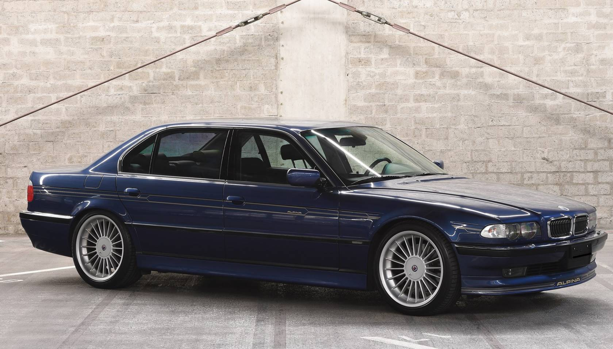
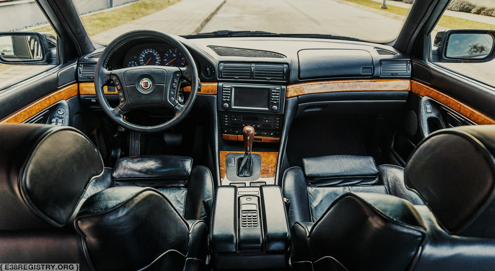
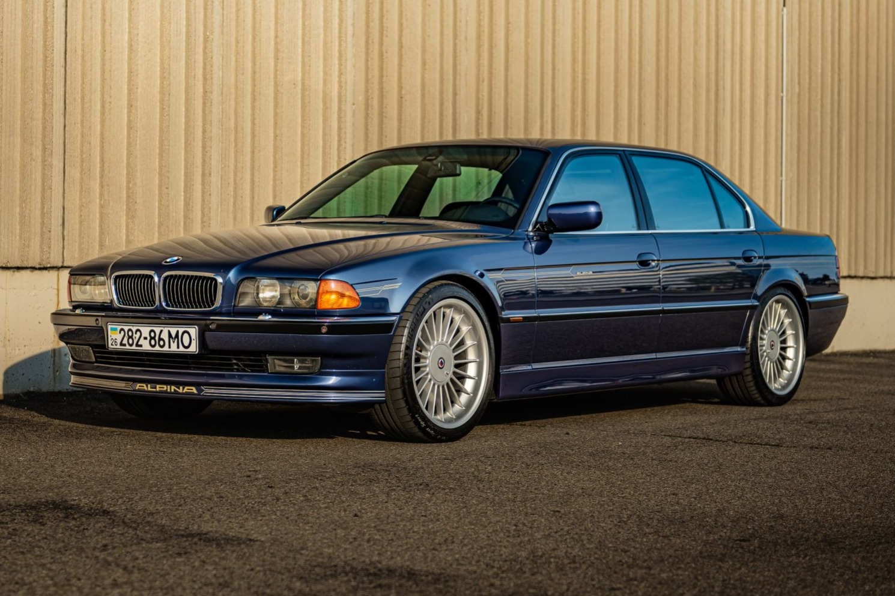

The Alpina B12 E38 was the ultimate expression of BMW’s flagship luxury sedan, a car that seamlessly blended long-distance refinement with bespoke performance enhancements. Alpina’s philosophy was never about outright aggression but about elevating the driving experience to a level of effortless speed and sophistication. The B12’s exclusivity was evident not just in its hand-finished details but in its approach to performance—where BMW’s V12-powered 7 Series prioritized smoothness, Alpina injected a sense of urgency, making the B12 a grand tourer in the truest sense. Long before high-performance luxury sedans became commonplace, the B12 stood apart as a car that could cover vast distances at high speed, with an ease that few cars of its era could match.
Bespoke touches extended beyond the engine bay, with Alpina’s signature details setting the car apart from standard 7 Series models. Subtle aerodynamic refinements, distinctive multi-spoke wheels, and finely tailored interiors made each B12 unmistakably Alpina. The exclusivity was further emphasized by its limited production, ensuring that the B12 remained a rare sight even in period. It was a car for those who appreciated performance without the need for theatrics—an understated statement of taste and engineering excellence. Today, it stands as one of the most desirable iterations of the E38, a final flourish of Alpina’s unique approach to high-performance luxury before the automotive landscape shifted toward forced induction and digital complexity.
The Alpina B12 E38 was produced in two distinct versions: the B12 5.7 and the later B12 6.0. Based on BMW’s 750iL, both models refined the standard car’s 5.4-liter M73 V12, with Alpina increasing displacement, reworking the internals, and enhancing power delivery. The B12 5.7, introduced in 1995, produced 387 horsepower and was paired with a recalibrated five-speed automatic transmission, allowing for smooth yet authoritative acceleration. In 1999, Alpina unveiled the B12 6.0, which featured a 5.9-liter version of the V12 producing 424 horsepower, along with BMW’s advanced Steptronic transmission for more responsive shifting. Both models retained the E38’s renowned ride comfort but benefitted from Alpina’s refined chassis tuning, making them deceptively agile for their size. With production numbers limited to just 202 units for the 5.7 and 94 for the 6.0, these cars remain among the rarest and most desirable interpretations of the E38 platform.
When considering a B12 today, careful attention should be paid to maintenance history, as parts specific to Alpina models can be difficult to source and expensive to replace. The M73 V12, while known for its smoothness and durability, requires regular servicing, particularly concerning ignition components, cooling system upkeep, and potential intake manifold leaks. The Steptronic transmission in the B12 6.0 is robust but benefits from periodic fluid changes, despite BMW’s original “lifetime” fill claim. Alpina-specific bodywork, wheels, and interior trim pieces can also be challenging to replace, making originality a key consideration when purchasing. As with any E38, electrical issues can arise, particularly with aging wiring harnesses and complex luxury features. However, for those willing to seek out a well-maintained example, the B12 offers a rare blend of exclusivity, craftsmanship, and refined performance that few other luxury sedans of its era can match.